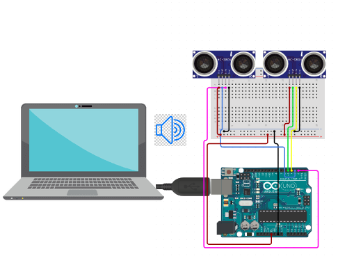

Congar

Projeto de Pesquisa desenvolvido pelo discente Josemar Ferreira Gama sob orientação do Prof. Msc. Cláudio Rogperio Gomes da Silva.
CongAr é um dispostivo desenvolvido com placas micro-controladoras que busca criação de instrumentos musicais de baixo custo utilizando conceitos de IoT. O projeto atualmente utiliza a IDE Arduino para programação das placas e linguagem Python para procesamento dos dados originados das placas, a comunicação se dá por meio de entradas portas seriais e protocolos UDP e MQTT.
repositório do projeto no link:
CongArTecnologias utilizadas no projeto:
Clique sobre as tecnologias para saber mais